| Type | Périmètre | Niveau | Date | Points | Temps |
|---|---|---|---|---|---|
| MKBAM | Motrices | 2N | 13/11/2026 | 2 | 5,0 h |
| MKBDR | Remorques | 2N | 13/11/2026 | 4 | 7,0 h |
| N° | Point | Voiture / dessin | Gravité | Temps | Constat |
|---|---|---|---|---|---|
| 1 | M1 D2 | Motrice (Droit-Pair) M1 | Critique | 4,0 h | Corrosion feuilletante sur le pourtour du cadre de hublot… |
| 2 | R1 D1 | Remorque (Droit-Pair) R1 | Critique | 3,0 h | Corrosion perforante en pied de caisse sur ~10 cm… |
| 3 | R1 DT | Remorque (Droit-Pair) R1 | Moyenne | 1,5 h | Corrosion autour des fixations de la trappe… |
| 4 | R2 G4 | Remorque (Gauche-Impair) R2 | Moyenne | 2,0 h | Cloquage de peinture avec début de corrosion… |
| 5 | M2 G1 | Motrice (Gauche-Impair) M2 | Mineure | 1,0 h | Points de rouille superficiels… |
| 6 | R3 D5 | Remorque (Droit-Pair) R3 | Mineure | 0,5 h | Rouille superficielle sur arête… |
| Total — 6 points | 12,0 h | ||||
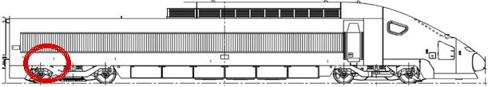
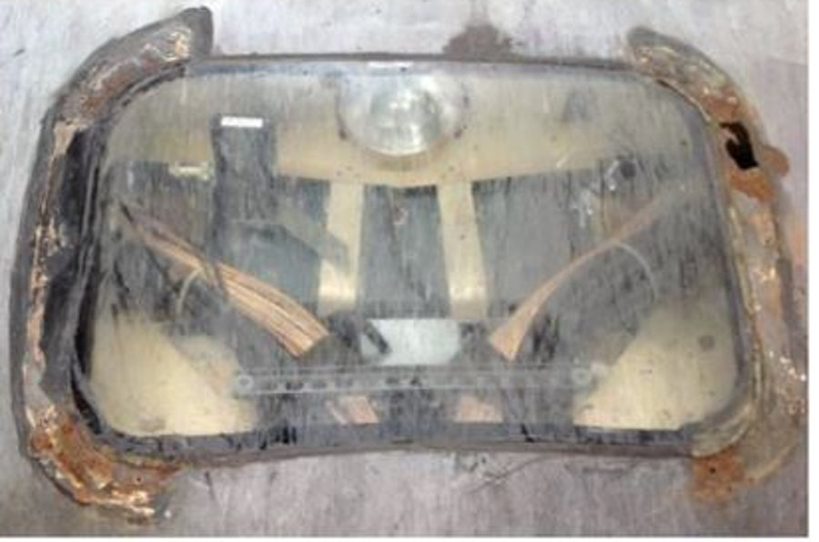
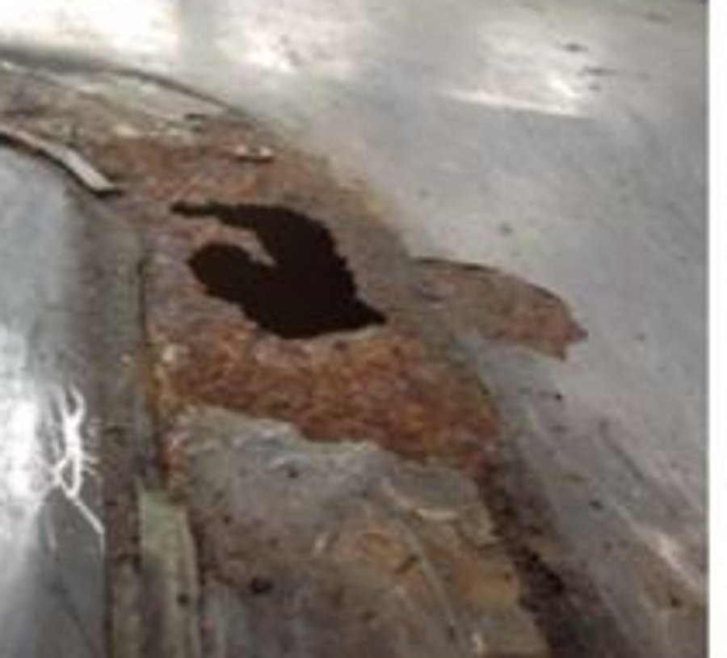
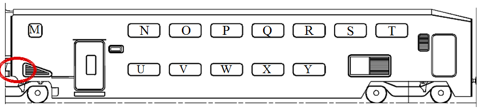
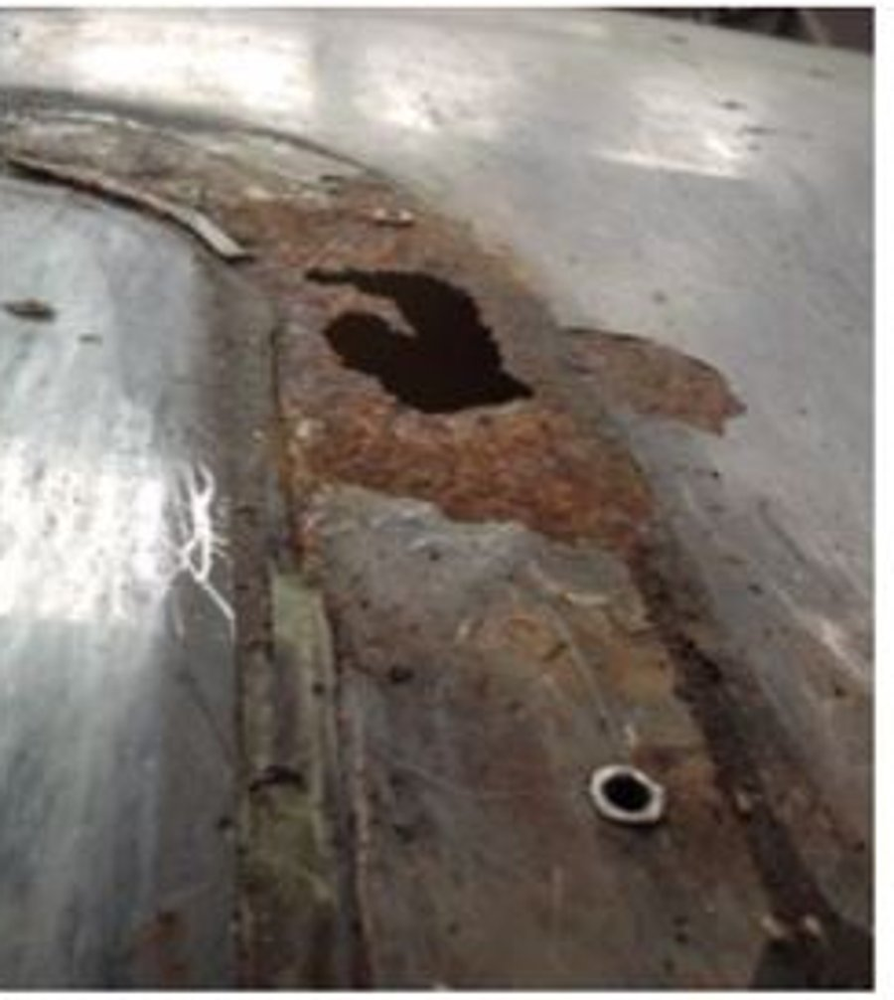
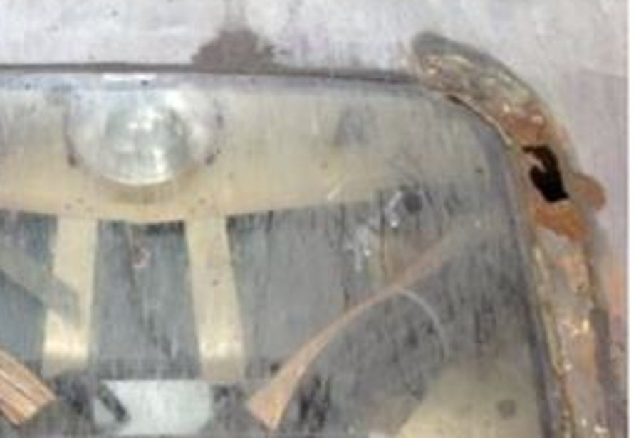
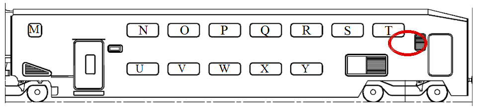
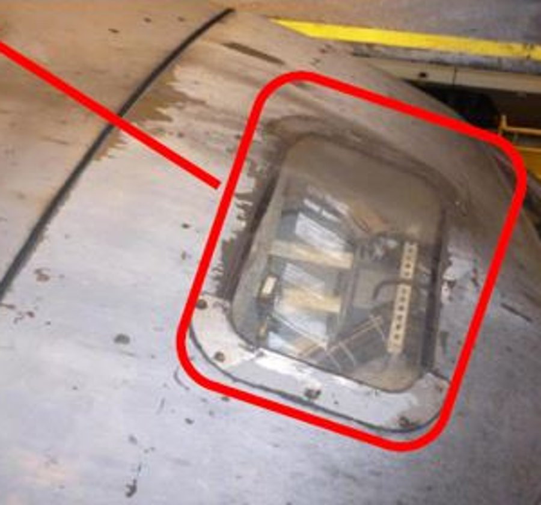
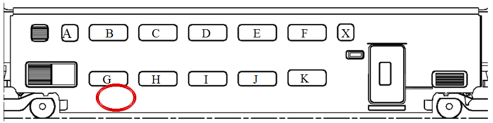
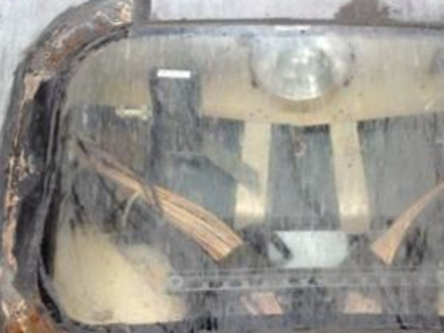
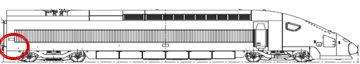
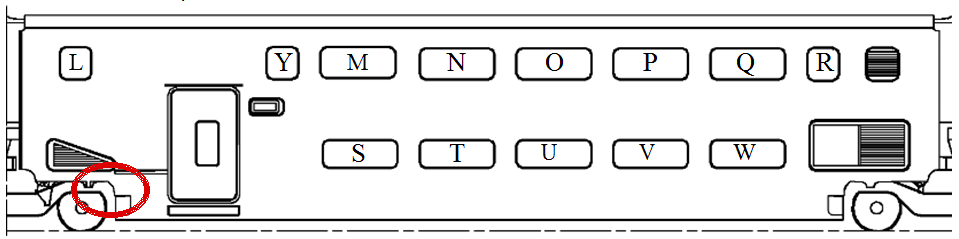